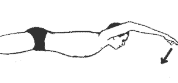
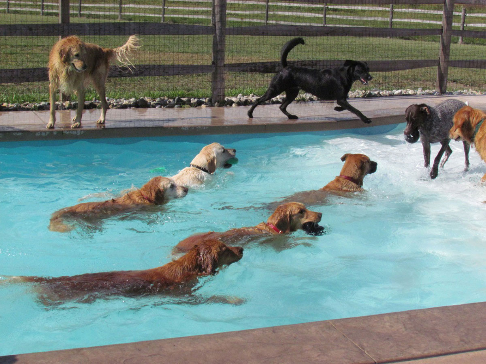
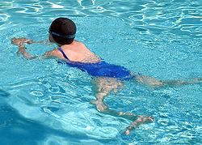
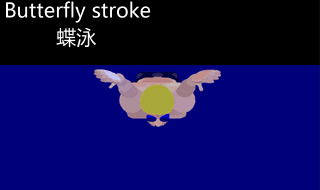
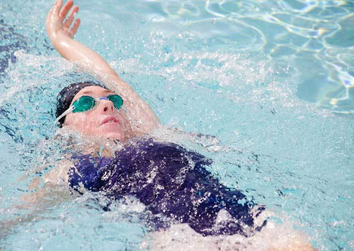

| NOM DE LA TECHNIQUE |
DESCRIPTION |
DEMONSTRATION |
| Crawl |
Nager le crawl c'est ramper sur l'eau. To crawl signifie ramper et donne une image juste de la technique utilisée pour nager : prendre de l'eau devant soi avec les mains et les bras et la pousser derrière le corps. En natation apprendre le crawl c'est aussi choisir la technique de nage qui permet d'aller le plus vite dans l'eau. |
 |
| la nage en chien |
La nage du chien est un style de nage simple. Il est caractérisé par le nageur couché sur sa poitrine et un mouvement alterné des mains et des jambes qui rappelle la façon dont nagent les chiens et les autres animaux. Il s'agit effectivement d’un « trot » dans l’eau plutôt que sur terre. |
 |
| La brasse |
La brasse présente la particularité d'être une nage aisément accessible au débutant, mais dont la bonne exécution reste complexe, y compris pour le nageur de haut niveau1. Les mouvements de la brasse, leur coordination et leur vitesse d'exécution sont dès lors très variables suivant le nageur et son expérience. Ces variations se répercutent d'une part sur l'efficacité de la force propulsive, assurée essentiellement par les membres inférieurs ; sur l'ampleur des résistances à l'avancement d'autre part. |
 |
| Papillon |
Le papillon est un style de nage ventral, où les bras et les jambes agissent symétriquement. Les bras exercent une traction puis une poussée propulsant le corps vers l'avant. Le retour des bras s'effectue en les lançant hors de la surface de l'eau vers l'avant. Le corps a une action d'ondulation, similaire à celle du dauphin. |
 |
| Dos |
En général, les nageurs utilisent la technique dite du dos crawlé, étant considérée comme la plus rapide sur le dos. Le style consiste à nager sur le dos, en se propulsant à l'aide d'un mouvement alternatif des bras, et d'un battement de jambes. Par rapport aux autres styles de nage, le dos a l'avantage de ne pas poser trop de problèmes de respiration (respiration à chaque mouvement de bras), car le visage est en permanence hors de l'eau |
 |
| Trudgeon |
Le trudgeon ou trudgen est une technique de nage pratiquée avant la mise au point du crawl, qui se caractérise par le retournement du corps d'un côté sur l'autre, et le dégagement alterné des bras au-dessus de l'eau, accompagné d’un faible mouvement des jambes ressemblant à des coups de pieds alternés. |
.jpg) |